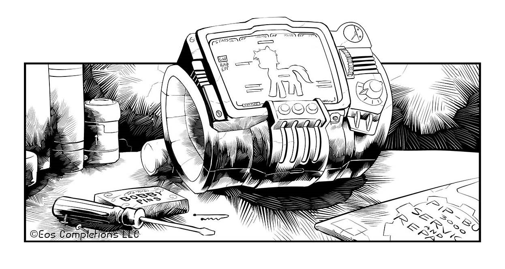

卷一
步入廢土
Equestrian Wasteland
前言
關於嗶嗶小馬和可愛標誌

若要我告訴你此生中最大的冒險經歷——解釋我和我的夥伴是如何走到這一步，以及為什麼我接下來會這麼做，也許我應該先解釋一下什麼是嗶嗶小馬(PipBuck)。
什麼是嗶嗶小馬呢？嗶嗶小馬是一個戴在前腿蹄腕上的裝置，避難廄裡的每隻小馬，在年紀大到可以開始工作時，都會分配到一個。
結合獨角獸魔法和科技，嗶嗶小馬將會持續監測你的健康狀況，甚至能幫助施用治療膏藥和其他藥物，追蹤並管理鞍包裡的所有物品、輔助修理工作，還有儲存各種各樣的記錄和地圖，蹄子一按就可以使用了。
此外，它還能讓你隨時收聽避難廄的廣播節目，畢竟它可以接收並解碼幾乎任何無線電頻率。還不只這樣。
每個小馬的嗶嗶小馬都會生成E.F.S.(Eyes-Forward Sparkle，視覺強化魔法)，能顯示方向並幫助你判斷周圍的小馬或生物是否有敵意。不過，嗶嗶小馬最驚豔的功能，應該是能利用S.A.T.S.(Stable-Tec Arcane Targeting Spell，避難廄科技輔助瞄準魔法)，在短時間內以魔法協助你戰鬥。
噢，別忘了還有一個功能：它可以持續追蹤被標記的物品或小馬的位置，包括其他嗶嗶小馬的佩戴者。所以如果某隻小馬走丟了——別問我你怎麼可能會在避難廄裡迷路，這種事確實偶爾會發生——那麼只要知道迷路小馬的標記，任何小馬都可以立即找到他。
它甚至可以調高亮度當照明燈使用。
所以，嗶嗶小馬真的是獨角獸神秘科學的結晶。
因此，擁有一個嗶嗶小馬是一項巨大的優勢。然而正因這一切聽起來是如此美妙和神奇，所以很難讓那些從未在避難廄生活過的小馬們理解，在二號避難廄生活的小馬眼中，嗶嗶小馬有多麼普通、多麼尋常。這也是為什麼，之前我會對擁有嗶嗶小馬作為可愛標記而感到失望。
二號避難廄裡的每匹小馬都有一個嗶嗶小馬。至於我剛提到的所有功能？大多數小馬連一半都用不到。
他們只用它來收聽避難廄廣播——傍晚傾聽薇薇．萊米(Velvet Remedy)甜美的歌聲，白天則收聽學校最新的歌唱比賽。避難廄有兩種足球聯賽，一種允許使用S.A.T.S.，而另一種則禁止使用。除此之外，大多數小馬平時對自己的嗶嗶小馬毫不關心。
監督(Overmare)會在每隻小馬舉行可愛標記派對(Cutie Mark Party)時，授予他們專屬的嗶嗶小馬——就是在你側身出現可愛標記的一兩天後，這些標記能讓其他小馬知道你有什麼特長和天賦。
一旦它出現，監督就知道要指派什麼工作給你；你也會知道自己在避難廄裡的歸宿。所以，並不是很高興，因為我最與眾不同的部分，竟然是每匹小馬都有的東西，這就好像是在說我一點都不特別。
當然，得到一個嗶嗶小馬的可愛標記，應該代表我能成為一個超棒的嗶嗶小馬維修工什麼的，但實際上，這就像得到一個「可愛標記」當我的可愛標記。
更糟糕的是，我是最後一個得到可愛標記的小馬。回想起來並不奇怪，當你應該擅長的事情是某個在找到你應該擅長的事情之前無法得到的事物，那麼要找到你應該擅長的事物就有點難了。為此我什麼都嘗試過，我甚至還試著發明些新東西。
身為一匹獨角獸，與生俱來的魔法能力讓我能進行陸馬無法享有的精細操作。任何小馬都可以用牙齒咬住鑰匙來開鎖，但要同時使用多種工具進行非常精密的作業呢？
那就需要精確的懸浮術了。所以我決定學習用髮夾和螺絲起子撬鎖，之後我甚至越來越精通此道。可惜的是，這沒有讓我得到可愛標記，反而讓我陷入麻煩。
我甚至還參加了那個讓我顏面掃地的C.A.T.(Cutie-mark Aptitude Test，可愛標記能力測試)，期待它能引導我找到自己的天賦。結果並沒有，我的C.A.T.分數極度平均，只有少部份領域的得分稍高，這代表我可能適合擔任嗶嗶小馬技術員(PipBuck Technician)或避難廄忠誠監察(Stable Loyalty Inspector)。
關於這兩個選項，我得提一下，考慮到獨角獸通常會從事行政或技術性工作，所以相比之下這個結果又更顯得平平無奇了。確切來說，是除了獨角獸中天生的藝術家之外，比如薇薇．萊米。正如我之前說的，獨角獸與生俱來的魔法能力在一定程度上讓我們對精細操作更得心應蹄。同樣地，監督和她的內閣也一直都是由獨角獸擔任。
畢竟，用來培育我們地下蘋果園的模擬陽光，是由監督的獨角獸魔法所製造。雖然我們種的蘋果不如舊書裡畫的那樣漂亮紅潤，但就是這些東西讓我們得以生存。
要不是他們先讓我去試試那兩個崗位，我才能在獲得自己的嗶嗶小馬前接觸到它，否則我可能永遠無法獲得可愛標記。
噢，我的名字叫小皮(LittlePip)。很奇怪吧？我被取這個名字是因為我年齡最小、身形也最小。就連我母親也還沒糊塗到給我取名叫“皮小妞(Pipsqueak)”(並不是說我不愛她，不過這匹母馬的可愛標記是一瓶蘋果烈酒……)。總之，有時候會發現這樣的名字其實也蠻有趣的。
很高興認識你們。接下來就是我的故事……